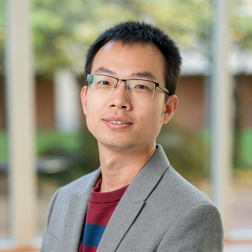

个人简介
韦晶博士，北京大学环境科学与工程学院研究员、博士生导师、助理教授，入选海外高层次青年人才计划、斯坦福大学全球前2%顶尖科学家“终身科学影响力”榜单。 主要从事空气质量研究，聚焦气溶胶、颗粒物及其化学成分以及痕量（污染与温室）气体，利用卫星遥感、大数据与人工智能（机器学习与深度学习）开展研究，并评估空气污染和极端天气对环境、健康与气候的影响。 至今以（共同）第一或通讯作者在《Nature Communications》《The Lancet Planetary Health》等权威期刊发表SCI论文100余篇，其中《Web of Science》标注9篇ESI热点(Top < 0.1%)论文、20篇ESI高被引(Top < 1%)论文； 10篇论文被引超过200次，其中第一作者论文被引超过1300次；总被引超过16,000次，H指数为59。 荣获AGU James R. Holton奖(2022)、《Remote Sensing》杰出青年科学家奖(2023)、IARA世界青年气溶胶科学家奖(2026)；入选MIT Technology Review 2026年度“35岁以下科技创新35人(全球)”；位列OpenAlex近十年大气科学领域引用前0.1%作者；入选斯坦福大学“全球前2%科学家”榜单(2021年至今)。 担任《Earth System Science Data》编辑，以及《Journal of Geophysical Research: Atmospheres》和《IEEE Transactions on Geoscience and Remote Sensing》副编辑。 研究受到CNN News、CBS News、Yahoo News、US News、The Hill等媒体报道。开发了全球(GHAP)、中国(CHAP)、美国(USHAP)高分辨率高质量空气污染数据集，被广泛应用并支撑发表500余篇应用论文。
工作简历
-
2025/09–现在: 助理教授, MEEKL-AERM, 环境科学与工程学院、青藏高原研究院及环境与健康中心，北京大学，北京，中国
-
2024/12–2025/07: 助理研究科学家, 卫星地球系统协作研究所(CISESS) & 地球系统科学跨学科中心(ESSIC)，马里兰大学，美国
-
2024/10–2025/07: 助理研究科学家, 美国国家航空航天局戈达德太空飞行中心(NASA GSFC) & 地球系统科学跨学科中心(ESSIC)，马里兰大学，美国
-
2024/02–2024/09: 助理研究科学家, 大气与海洋科学系 & 地球系统科学跨学科中心(ESSIC)，马里兰大学，美国
-
2022/02–2024/01: 博士后(教师研究)副研究员, 大气与海洋科学系 & 地球系统科学跨学科中心(ESSIC)，马里兰大学，美国
-
2021/02–2022/01: 博士后研究学者, 化工与生化工程系, 爱荷华技术研究所，爱荷华大学，美国
-
2017/11-2018/09: 研究助理, 地球系统科学中心，清华大学，中国
-
2017/03-2017/09: 研究助理, 太空与地球信息科学研究所，香港中文大学，中国
教育背景
-
2019/10-2021/01: 联合培养博士，大气科学专业，大气与海洋科学系 & 地球系统科学跨学科中心，马里兰大学，美国
-
2018/10-2021/01: 博士，全球环境变化专业(地理学)，全球变化与地球系统科学研究院 & 遥感科学国家重点实验室, 北京师范大学，中国
-
2014/09-2017/06: 硕士，摄影测量与遥感专业, 测绘科学与工程学院, 山东科技大学，中国
-
2010/09-2014/06: 学士，遥感科学与技术专业，测绘科学与工程学院, 山东科技大学，中国
研究兴趣
-
大气气溶胶、颗粒物(PM)及化学组分
-
大气痕量（污染与温室）气体（如 O3、NO2、CH4、CO 和 CO2）
-
空气污染物建模与健康暴露评估
-
空气污染与极端天气对环境健康的影响
-
卫星遥感影像的云与云阴影检测
-
（可解释）人工智能（机器学习、深度学习和迁移学习）
-
大数据（卫星、地面、再分析和模式数据等）
荣誉奖励
-
2026: 35岁以下科技创新35人(全球), MIT Technology Review (MIT TR35)
-
2026: 世界青年气溶胶科学家奖, 国际气溶胶研究联盟 (IARA)
-
2025: 高级会员, 电气电子工程师学会 (IEEE)
-
2024: 最佳论文奖, Environmental Science & Technology
-
2024: 最佳论文奖, 地球系统科学跨学科中心，马里兰大学
-
2023: 杰出青年科学家奖, Remote Sensing (全球每年遴选一位青年科学家)
-
2022: 大气科学杰出青年科学家奖 (James R. Holton Award), 美国地球物理学会 (AGU) (全球每年遴选一位青年科学家)
-
2022: 最佳论文奖, 地球系统科学跨学科中心，马里兰大学
-
2021: 周廷儒奖学金, 周廷儒奖学金秘书处
-
2020: 青年博士生杰出人才奖学金, 上海同济高廷耀环保科技发展基金会
-
2019: 李小文遥感科学青年奖, 李小文基金理事会
-
2023: 山东省科学技术进步奖 (一等奖, 6/15), 山东省
-
2021: 优秀博士毕业生, 北京市
-
2021: 研究生学术创新特等奖, 北京师范大学
-
2020, 2019: 博士研究生国家奖学金, 中华人民共和国教育部
-
2018: 博士新生特等奖学金, 北京师范大学
-
2017: 优秀硕士毕业生, 山东省
-
2016: 优秀科技创新成果奖 (二等奖, 1/1), 山东省
-
2016, 2015: 硕士研究生国家奖学金, 中华人民共和国教育部
-
2014: 优秀本科毕业生, 山东省
作者认可与论文荣誉
-
近十年大气科学领域全球引用前0.1%作者, OpenAI Semantic Scholar 百分位 (OpenAlex)
-
2025: 全球顶尖前2%科学家 (生涯影响力), 斯坦福大学 & Elsevier
-
2025: 全球顶尖前2%科学家 (年度影响力), 斯坦福大学 & Elsevier
-
2024: 全球顶尖前2%科学家 (年度影响力), 斯坦福大学 & Elsevier
-
2023: 全球顶尖前2%科学家 (年度影响力), 斯坦福大学 & Elsevier
-
2022: 全球顶尖前2%科学家 (年度影响力), 斯坦福大学 & Elsevier
-
2021: 全球顶尖前2%科学家 (年度影响力), 斯坦福大学 & Elsevier
-
2021: 中国百篇最具影响力国际学术论文, 中国科学技术信息研究所: Remote Sensing of Environment (Wei et al., 2021)
-
ESI热点 (Top < 0.1%) 论文 (9)
-
Nature Communications (Wei et al., 2023)
-
Remote Sensing of Environment (Wei et al., 2022, 2021, 2019)
-
Environmental Science & Technology (Wei et al., 2019)
-
Atmospheric Chemistry and Physics (Wei et al., 2023, 2020)
-
Atmospheric Environment (Wei et al., 2019)
-
Remote Sensing of Environment (Yang et al., 2025)
-
ESI高被引 (Top < 1%) 论文 (23)
-
Nature Communications (Wei et al., 2023)
-
The Lancet Planetary Health (Wei et al., 2023)
-
Environmental Science & Technology (Wei et al., 2023, 2022, 2019)
-
Remote Sensing of Environment (Wei et al., 2022, 2021, 2019)
-
Atmospheric Chemistry and Physics (Wei et al., 2023, 2021, 2020, 2019)
-
Environment International (Wei et al., 2021)
-
Atmospheric Environment (Wei et al., 2019, 2018)
-
Remote Sensing of Environment (Yang et al., 2025)
-
Circulation (Xu et al., 2023)
-
BMC Medicine (Cai et al., 2023)
-
Science of The Total Environment (Cai et al., 2023; Liu et al., 2021)
-
Journal of Cleaner Production (Xu et al., 2021; Xue et al., 2021)
-
Remote Sensing (He et al., 2018)
-
期刊最高被引论文 (3)
-
Remote Sensing of Environment (since 2019) (Wei et al., 2021, 2019)
-
Remote Sensing of Environment (since 2018) (Wei et al., 2019)
-
Atmospheric Environment (since 2018) (Wei et al., 2019)
-
期刊排名 (5)
-
1st 最高被引论文, Remote Sensing of Environment (Wei et al., 2022)
-
1st 最高被引论文, Remote Sensing of Environment (Wei et al., 2021)
-
1st 最高被引论文, Atmospheric Chemistry and Physics (Wei et al., 2023)
-
1st 最高被引论文, Atmospheric Environment (Wei et al., 2019)
-
1st 最高被引作者, Atmospheric Environment (Wei et al., 2019)
-
期刊封面、亮点、高影响或编辑推荐论文 (5)
-
Journal of Geophysical Research Atmospheres (Wei et al., 2018)
-
Environmental Science & Technology (Tian et al., 2024)
-
Remote Sensing (Tian et al., 2023)
-
Hypertension (Xu et al., 2021)
-
Atmospheric Chemistry and Physics (Liu et al., 2020)
科研项目
-
优秀青年科学基金项目（海外）, 国家自然科学基金, 2026–现在, 负责人
-
京津冀环境综合治理国家科技重大专项 (2026ZD1212902), 2026–现在, 课题负责人
-
中央高校基本科研业务费, 北京大学, 2025–现在, 负责人
-
教育部基础学科和交叉学科突破计划 (JYB2025XDXM906), 2025–现在, 参与 (Co-I)
-
兵团重大科技项目 (2025AA001), 2025–现在, 参与 (Co-I)
-
地球科学应用科学计划, 美国国家航空航天局 (NASA), 2021–2025, 参与 (Co-I)
-
国家重点研发计划 [2017YFC1501702], 研究骨干
-
国家自然科学基金 [42030606, 91544217, 41171270], 研究骨干
编辑/编委服务
-
主题编辑, Earth System Science Data, 2022–现在
-
副编辑, Journal of Geophysical Research: Atmospheres, 2023–现在
-
副编辑, IEEE Transactions on Geoscience and Remote Sensing, 2025–现在
-
副编辑, Remote Sensing, 2022–现在
-
青年编辑, The Innovation, 2023–现在
-
编辑委员会成员: International Journal of Digital Earth (2022–现在); Big Earth Data (2021–2023)
-
青年编辑委员会成员: 遥感技术与应用 (2021–现在); 大气与环境光学学报 (2022–现在); 环境卫生学杂志 (2022–现在)
-
客座编辑: Atmospheric Measurement Techniques (2021–2023); Sustainability (2021–2022); Frontiers in Earth Science (2021–2022); Frontiers in Environmental Science (2021–2022); Frontiers in Public Health (2022); Atmosphere (2022); 遥感学报 (2021–2022)
国际专业组织会员与服务
执行秘书, 美华海洋大气学会 (COAA), 2023-2025
联合主席, 第8工作组(WG-8): 空气质量与健康, 国际大气环境遥感学会 (AERSS), 2023-现在
联合主席, 早期职业和研究生委员会, 国际大气环境遥感学会 (AERSS), 2022-2023
主席, ESSIC最佳第一作者论文奖评审委员会, 马里兰大学, 2023
分会召集人与主席, 国际地球科学与遥感大会 (IGARSS): 气溶胶与大气化学, 2025
主要召集人 (主席), 美国地球物理学会 (AGU) 分会, 2024
主要/联合召集人 (主席/联合主席), 欧洲地球科学联盟 (EGU) 分会, 2025
主要/联合召集人 (主席/联合主席), 亚洲-大洋洲地球科学学会 (AOGS) 分会, 顶级召集人, 2022
成员, 美国地球物理学会 (AGU) GeoHealth工作组, 2024-现在
评审委员, Remote Sensing 最佳博士论文奖, 2024
评审委员, Remote Sensing 学术旅行奖, 2024
会员: 美国地球物理学会 (AGU)、电气电子工程师学会 (IEEE)、美国气象学会 (AMS)、亚洲-大洋洲地球科学学会 (AOGS)、美华海洋大气学会 (COAA)、国际大气环境遥感学会 (AERSS)
教学经历
主讲教师, 环境人工智能方法, 北京大学, 2026-现在
助教, 卫星大气特性遥感, 马里兰大学, 2024-现在
助教, 大气与海洋遥感, 马里兰大学, 2024-现在
同行评审服务 (240+ 已验证评审)
研究项目评审: NASA ROSES 面板专家与评审人
图书/专著提案评审: Elsevier
期刊同行评审